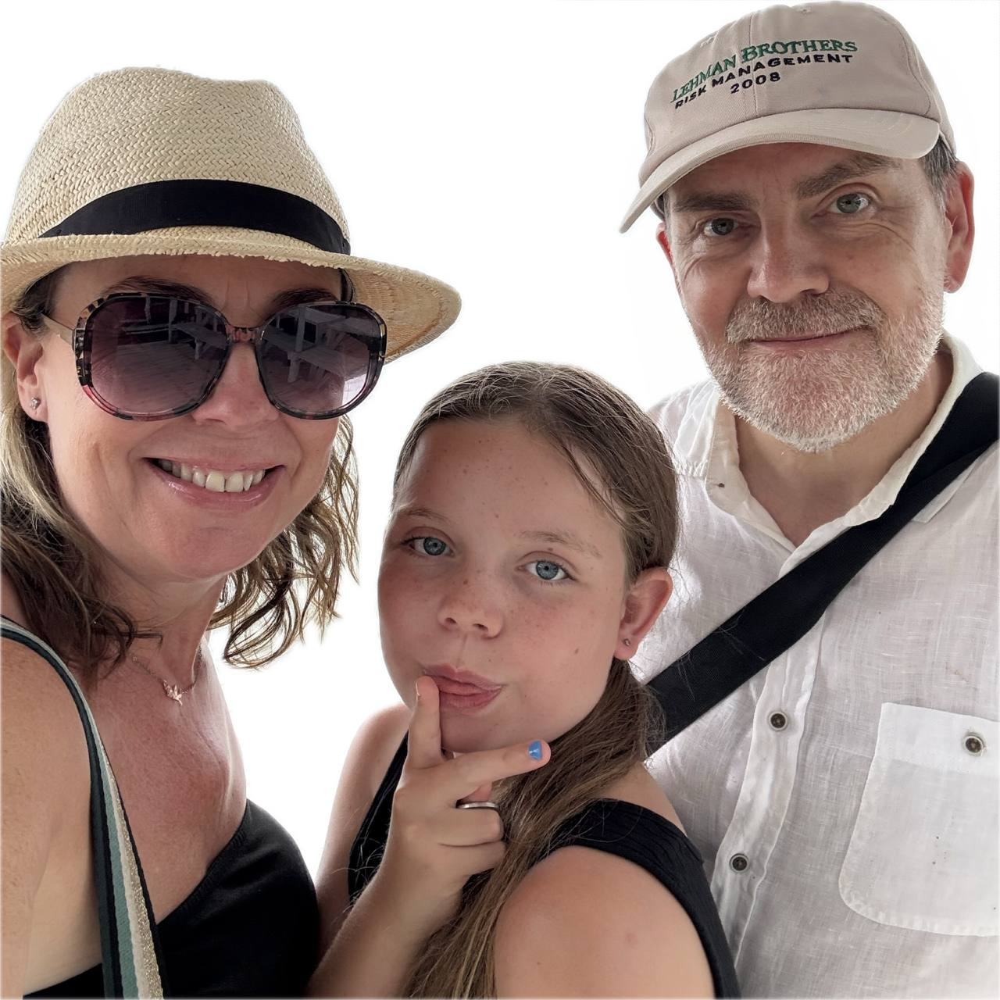

Meet the baker
About Helen…

Hello, I’m Helen. Wife to Paul & Mum to Chloe. Otherwise known as the cake lady.
I’ve always been creative from a young age. Leaving school at 16 I studied at art college and became a window dresser. Skip forward a few years and I worked many years for a large fashion retailer managing a team of visual merchandisers. Based in central London most of the time, but also travelling the UK and further overseas in the Far East.
In 2014 everything changed and I became a mum.
I’ve always loved baking since I was a child, helping my Cornish Nan bake cakes in her kitchen.
These days I find baking is my way to relax and it allows me to express my creative side. In 2016 I decided not to return back into retail, and instead I took a part-time job in a local family run tea room. I absolutely loved it. I loved baking for them as it was so rewarding to hear the customers speak fondly about how delicious everything was.
In 2018 we set up Blossom Bakery, inspired by a trip to Japan where I fell in love with the Japanese cherry blossoms. We registered the business with our local council and obtained our five-star hygiene rating.
The rest is history.
I just love creating beautiful cakes for my clients. I have many returning clients who started with their wedding cake, then come back for gender reveals, baby showers and birthday cakes. It’s the best job and I get so much lovely feedback from my clients.
Order yours
Let's bake something for you
Mobile: 07939 618787 · Mon-Fri 9am-5pm · Sat 9am-12pm
Send a message